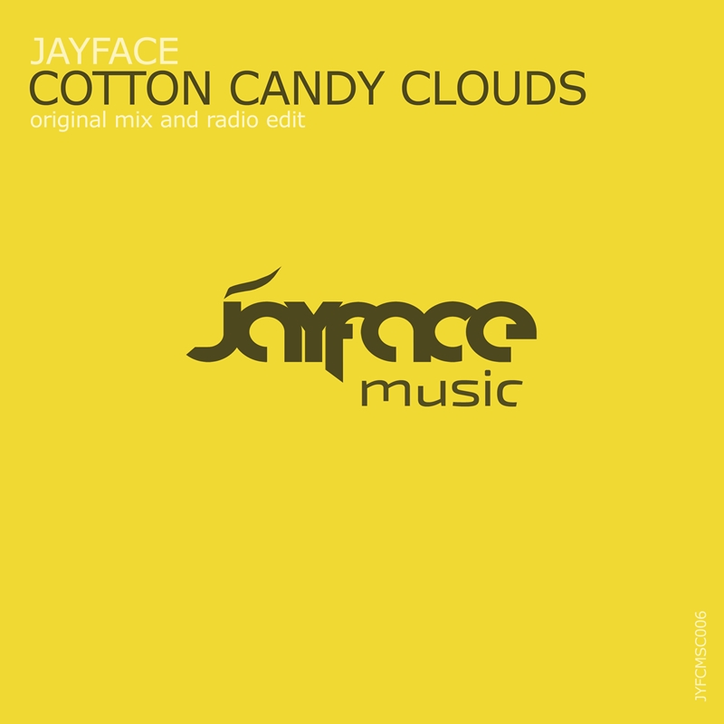
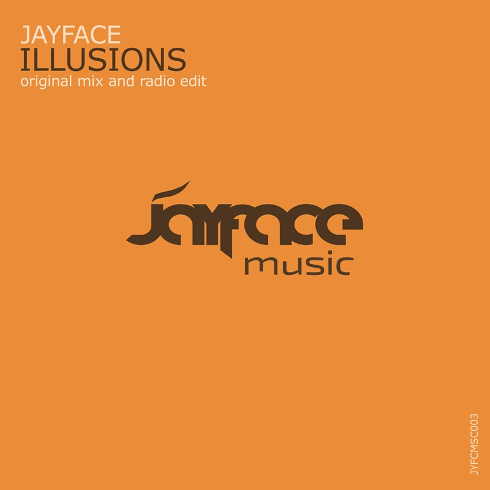

You can find my musics on Spotify, Beatport, Apple Music or on the other platforms.

CottonCandyClouds
28 Feb 2022

Illusions
14 Feb 2022
Jayface EDM producer, Jayface style. Songs: Two Way, Cirrocomulus, Ashes In The Wind, Illusions, Catapult, Cotton Candy Clouds, One Day, Let Go, Unknown Roads, Last Minute, Escape, Somewhere, Fly Away, Gravity, Someday, Rocky Mountains, Sky And Ground, Time / Lost Ep, Dimension, Perfection Ep, Mountain Ep, The End, Gloss Ep.
iTunes Charts: Let Go - Reached no 1 in Mexico in the trance chart and number 5 in India in the dance chart, 19. in India, 20. in the United States and 31. in Spain in trance chart. One Day - Reached number 103. in Netherlands in the trance chart. Last Minute - Reached number 5 in Switzerland in the trance chart and number 79. in the dance chart.
Beatport charts: Let Go - Beatport Closing Essentials: Trance, Beatport Lastest Releases: Trance Peak Position number 11 and total plays featured 14. Let Go / Pure Trance Neon: Retrospective 2020: Reached 26. on Trance Releases and total days charted 12, Trance Favorites June 2020 by Johan Gielen. Fly Away - Beatport Trance Top 100 Releases number 48, Escape - Beatport Trance Top 100 Releases number 83.
Spotify playlists: TranceFamily, Trance Favorites June 2020 and May 2021 by Johan Gielen, Pure Trance Neon, Suzy Solar's faves Jan and Oct 2021, Yeiskomp Trance Hits 2021 and Top 2021 Best Uplifting and Progressive Trance Music, Trance Weekly and more.
Juno Download: Gravity - Hard Trance Top Singles number 12 / July 2021.
Compilations: Let Go - Pure Trance Neon: Retrospective 2020 / BigTune on Pure Trance Radio 240, Last Minute - Interflow Records Best Of September 2020, Unknown Roads - Progressive Trance Essentials Vol. 14 LW Recordings, Dimension - Underground Trance Selections Vol. 04 and Simply Trance Vol. 13 LW recordings. (Discography & Supports full list is here)